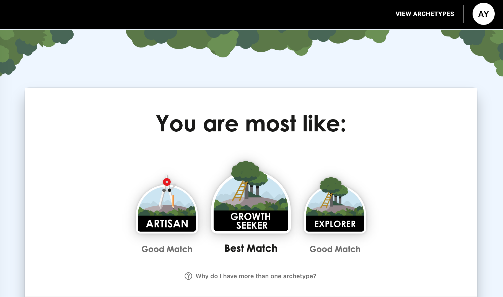
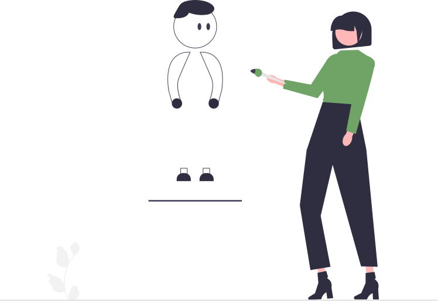
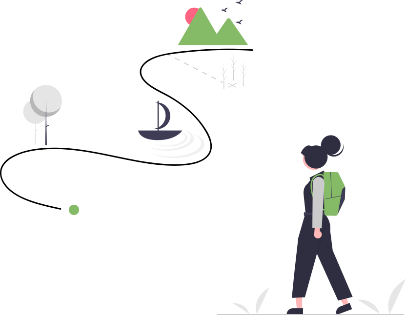

Who Am I
The PrinciplesYou Personality Test
It has been a while since I last did this test. In the sprit of
writing this blog, I have decided to re-do it. The test is
created by Ray Dalio, whose book Principles: Life and Work
have made a lasting impact on me. I have adopted some of the principles from this book
and applied them to my own life when it comes to important decision-making, including my decision to learn programming.
One of the principles I found particulary useful is to practice 'radical truth and radical transparency'.
This principle encourages open and honest dialogues and allows the best
thinking to prevail. Being truthful to others is important. So is
being truthful to ourselves.
Moment of truth
The results showed that my three archetypes are: Growth Seeker, Artisan and Explorer. Personally, I find this test to be quite accurate in
describing my personality type and core values.

Growth Seeker
Growth Seekers are defined by a deep passion for learning and personal growth and development. They
tend to be curious, humble, open to new ideas and experiences, and adaptable. Typical Growth Seekers
have an endless fascination with personal growth, meaning they devote themselves to improvement and evolution.
They possess a never-ending curiosity about the world and how they fit into it.
They have a thirst for knowledge and a need to understand the world and the people in it, particularly in
service of personal and professional growth. If it makes them more effective, it’s on their to-do list.
They are open to any constructive advice, even if it’s tough to swallow. They are flexible and adaptive to new
experiences and circumstances.

Artisans
Artisans are driven to use their creativity to bring life to beautiful and well-crafted ideas. They tend to be imaginative,
detail-oriented and attuned to their own and others' emotions.Artisans are driven to use their creativity to bring life to beautiful and well-crafted ideas.
Typical Artisans love to use their imagination and ingenuity to create novel works of art, products, or crafts. They use their attention to detail and precision
to perfect their creations and bring them to reality in a way few others can. Intuition and innate instincts guide their quest for originality and independent creation.
Other distinguishing characteristics include being independent-minded and preferring to do things their own way. Artisans tend to be curious about new ideas and experiences,
and in tune with and sensitive of their own and other people's deeper feelings that enable the creative process and form the basis of their creation and self-expression.

Explorers
Explorers love to take in new knowledge and are drawn to new experiences through intrinsic motivations.
Typical Explorers are driven by discovery, both about themselves and the world. They are spontaneous, curious, and open-minded, more intrigued by all things they don't know than self-impressed by what they already do. They are self-directed and chart their own path independently. They are attracted to ever-new experiences and endeavors, particularly those that include activities with other like-minded explorers and adventurers. They are typically comfortable with taking risks or diving into ambiguity, particularly if they can derive satisfaction and learning from the experience.